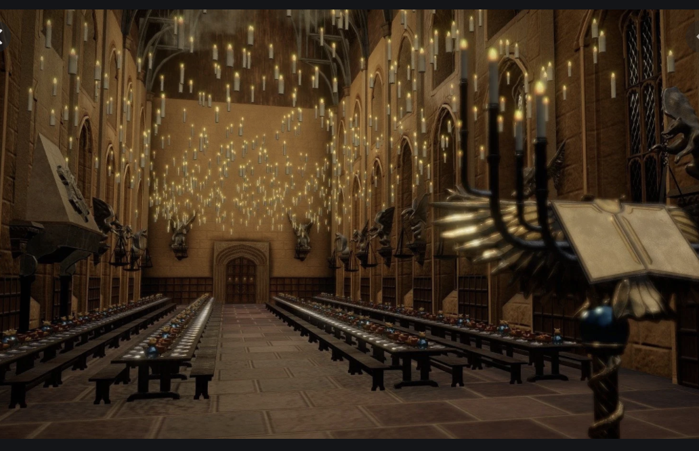

I know that "hogwarts is home" is a quote from the series but, face it. I AM ADDICTED TO THE WIZARDING WORLD!!! I
just did the math that the year I go to UTS (hopefully I get in, Sorry Sherwood Heights) is the year I go to
hogwarts. So, for now, I am working to make my home as close to hogwarts as I think is possible. Below is some links
to explore how I made each room with pictures (screenshots) from the movies.
I am aware that when I say "Potions classroom", I didn't make it into a
classroom...
I have a little "library" so That'll be the Hogwarts Library.
Myrtle's washroom...and cursed chamber of secrets.
I'll do the great hall...
Ravenclaw room...Slytherin room...Gryffindor room...
7 rooms. The number of horcruxes Tom Marvolo Riddle made. The number of horcruxes J.K. Rowling made. Each piece of
her soul woven into text. I'll be VERY busy with this many hyperlinks...
